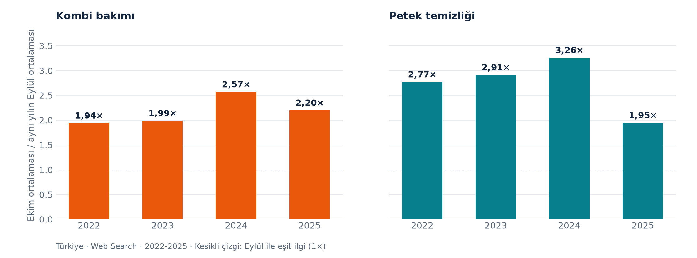

Kış hazırlığı aramaları Ekim’de hızlanıyor
Tamamlanmış dört sonbaharın Google Trends verisi, kombi bakımı ve petek temizliğinde Ekim ayının Eylül’den daha yüksek göreli arama ilgisi gördüğünü gösteriyor.
2022–2025 sonbaharları · Türkiye Web Search · Göreli arama ilgisi; kişi veya iş sayısı değil.
Artış aynı yönde; büyüklüğü her yıl değişiyor

Kombi bakımının yıllık oranları 1,94–2,57, petek temizliğinin oranları 1,95–3,26 aralığında. İki sorgunun da Ekim ortalaması, incelenen dört yılın tamamında Eylül'ün üzerinde.
Bu aralıklar betimleyicidir; istatistiksel güven aralığı veya 2026 gerçekleşmesi değildir. Google Trends sorguları ayrı normalize edildiğinden iki hizmetin mutlak arama hacimleri karşılaştırılmaz.
Servis teklifinde altı kritik soru
- Hangi cihaz ve işlem için teklif veriliyor?
- Kaç petek veya cihaz fiyata dahil?
- Servis ve ulaşım bedeli ayrıca mı?
- Malzeme ve yedek parçanın kapsamı ne?
- Vergi dahil toplam yazılı olarak net mi?
- Randevu, işin teslimi ve belge kapsamı nasıl belirlenecek?
Aynı kapsamı netleştirdikten sonra bedelleri karşılaştırın. Belirsiz bir zorunlu maliyet, sıfır maliyet değildir.
Ücretsiz teklif karşılaştırma aracını aç →Haber, görsel ve hesap dosyaları


Hizmetgo'nun metin, grafik ve özgün analizi kaynak gösterilerek CC BY 4.0 ile kullanılabilir. Google Trends kaynak verisi Google'ın koşullarına tabidir. Yayın kuruluşunun bağımsız editoryal değerlendirmesi esastır.
Nasıl hesaplandı?
11 Ekim 2026 Türkiye saatiyle indirilen Google Trends örnek çekimi, Türkiye / Web Search / tüm kategoriler kapsamında 1 Ekim 2021–30 Eylül 2026 penceresini kapsıyor. İki sorgu ayrı alınmıştır. Haber hesabında 2022–2025'in tamamlanmış Eylül, Ekim ve Kasım aylarındaki 104 haftalık terim gözlemi kullanılır.
Haftalar UTC başlangıç ayına atanır. Her yılın Ekim ortalaması aynı yılın Eylül ortalamasına bölünür; dört oranın medyanı raporlanır. 2026 Ekim/Kasım sonuçları, mutlak arama hacmi, şehir bazlı büyüme, fiyat değişimi veya gerçekleşmiş hizmet sayısı hesaplanmamıştır.